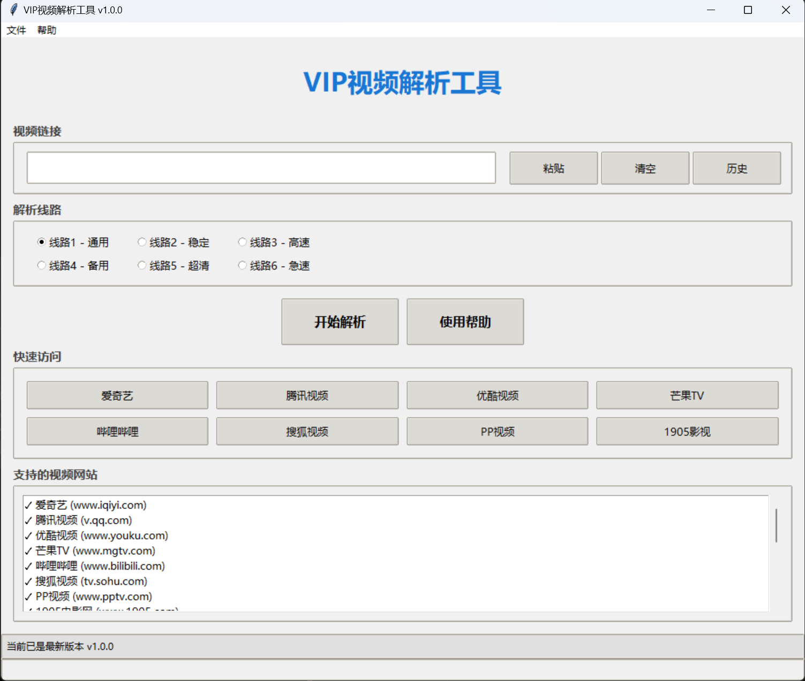

项目介绍
基于Python开发的VIP视频解析工具，支持多个主流视频网站的VIP视频解析和在线观看功能。采用多线路解析，确保稳定可靠的观看体验。
支持的视频网站
- 爱奇艺 (www.iqiyi.com)
- 腾讯视频 (v.qq.com)
- 优酷视频 (www.youku.com)
- 芒果TV (www.mgtv.com)
- 哔哩哔哩 (www.bilibili.com)
- 搜狐视频 (tv.sohu.com)
- PP视频 (www.pptv.com)
使用说明
- 复制需要解析的视频页面完整链接
- 点击"粘贴"按钮或直接粘贴到输入框
- 选择解析线路（建议从线路1开始尝试）
- 点击"开始解析"
- 如果当前线路解析失败，请尝试其他线路
更新日志
v1.0.0 (2024-03-14)
- 首次发布
- 支持主流视频网站解析
- 提供多条解析线路
- 实现基础解析功能
当前版本: v1.0.0
更新时间: 2024-03-14